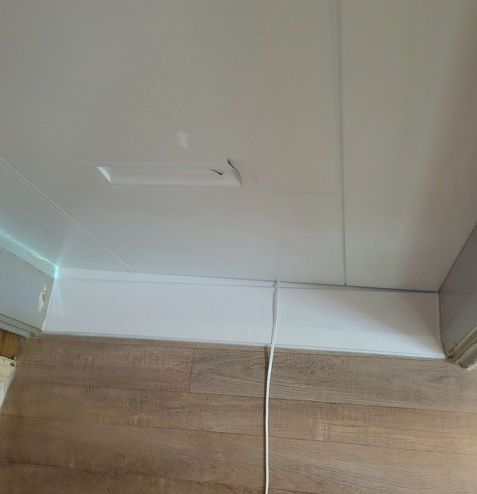
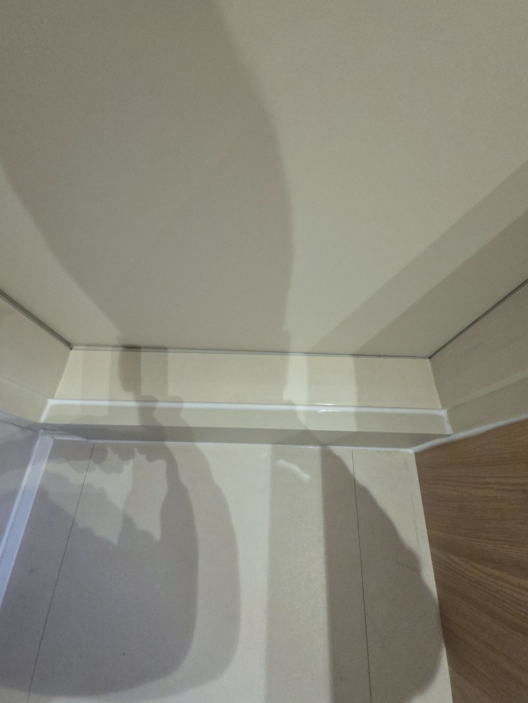
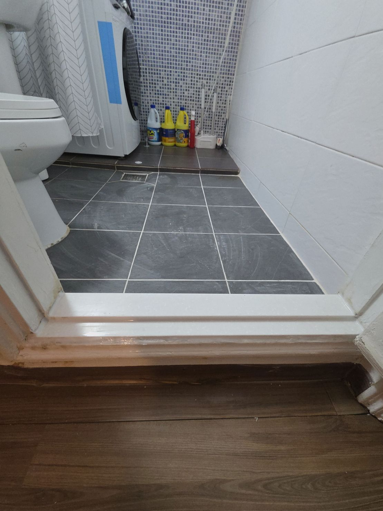
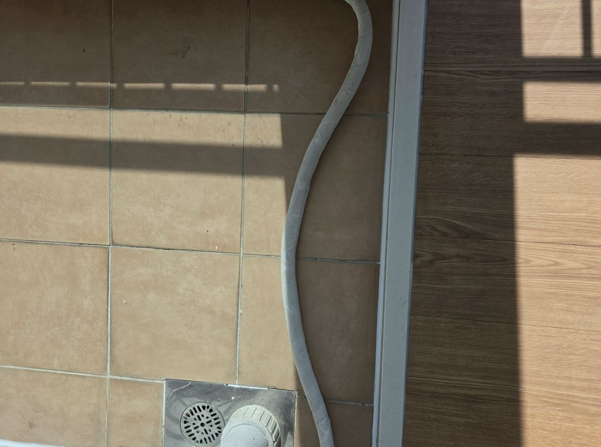
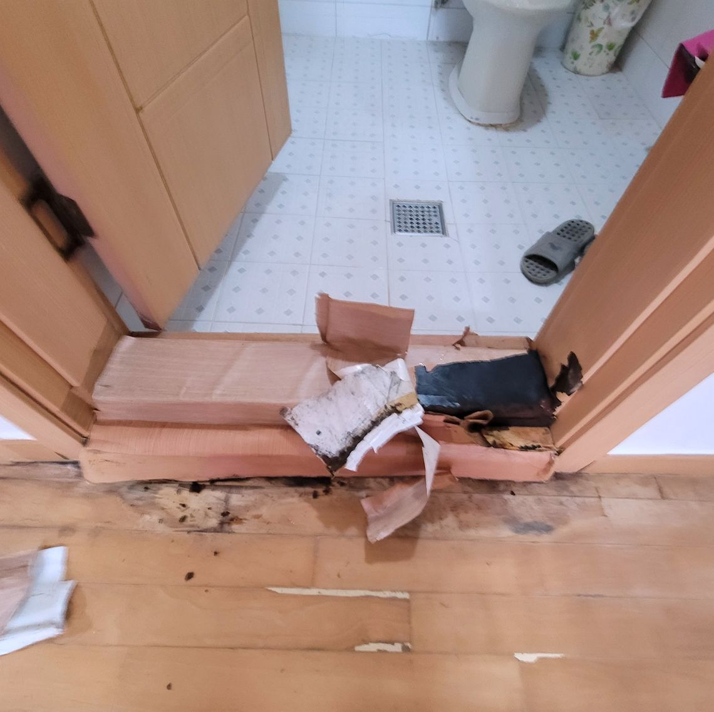
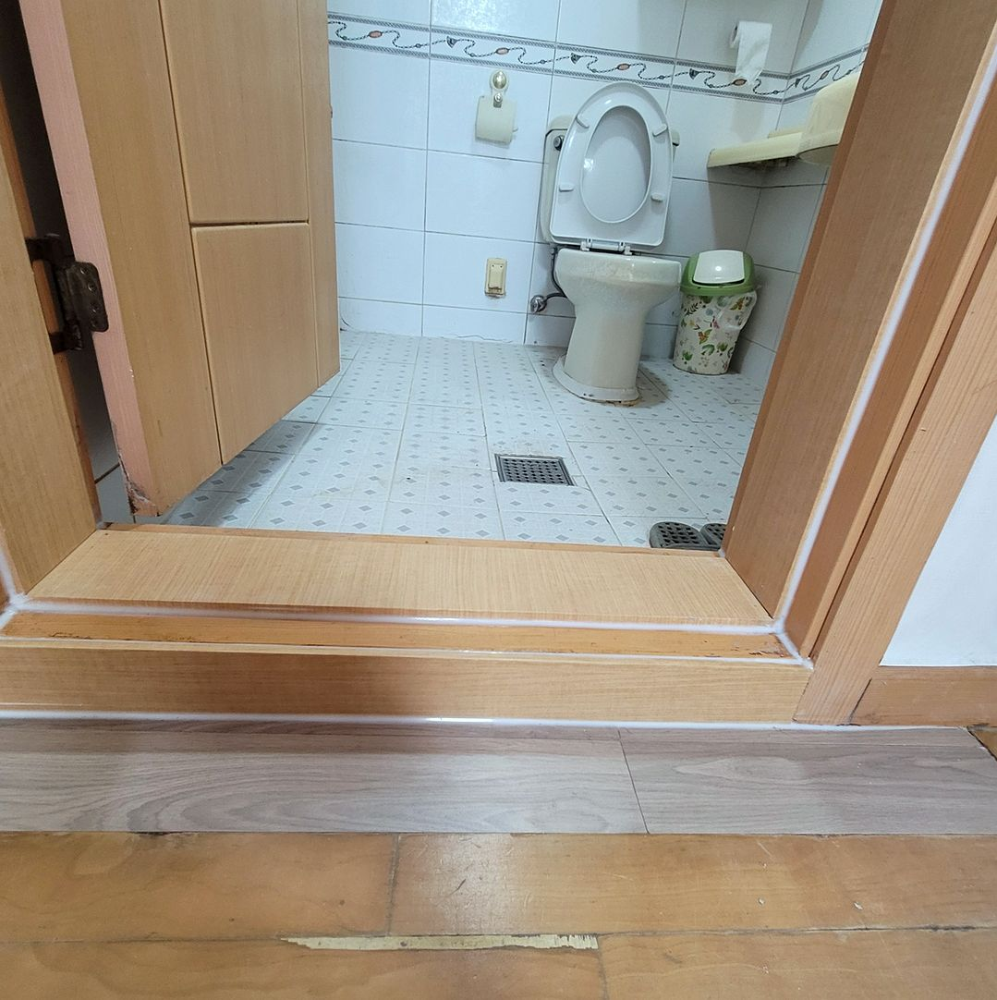
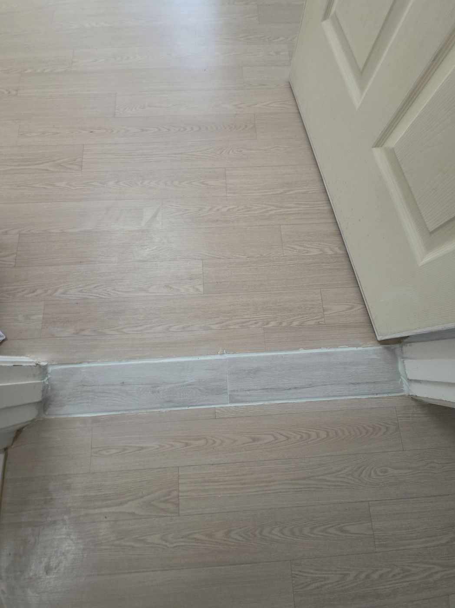
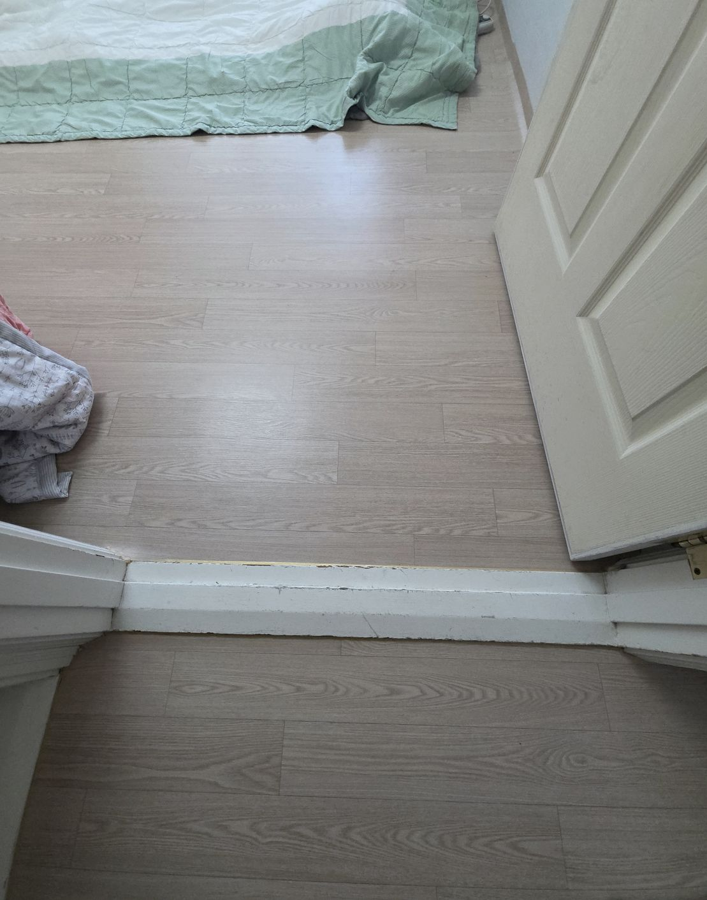
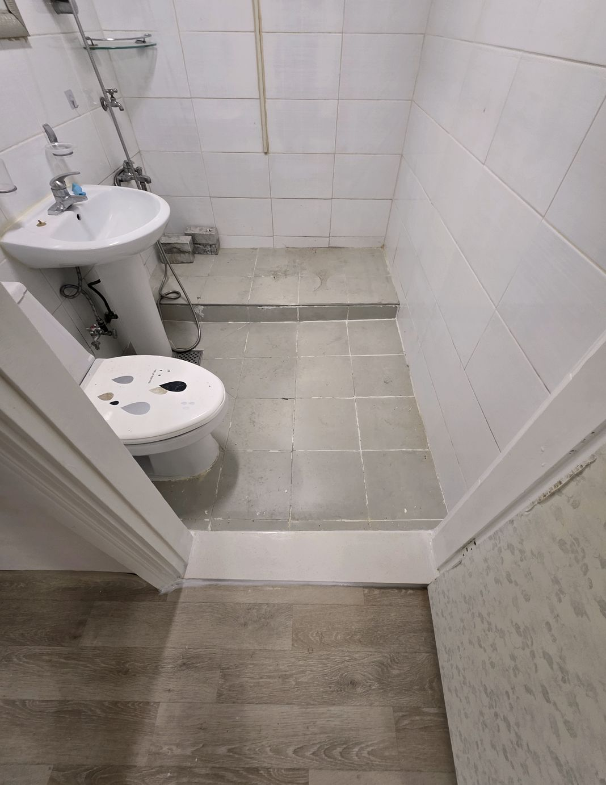
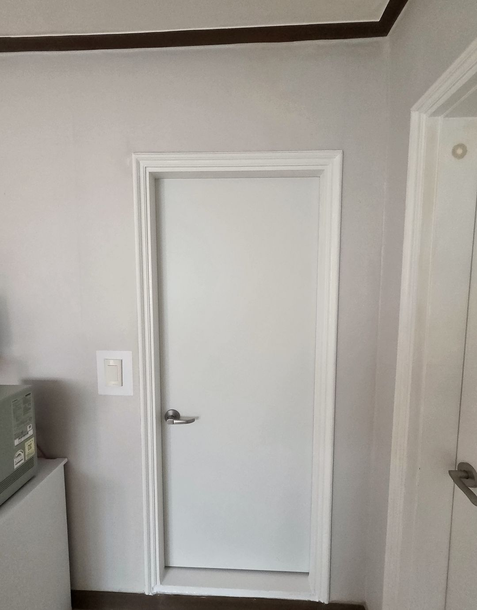

상가 입구 대리석이 깨져서 미관상 안 좋았는데 두께가 안 맞던 부분을 밑작업부터 다시 잡아주셨어요. 이제 걸려 넘어질 걱정 없이 편하게 다닙니다.
조서O · 인천 미추홀구 · 2026.04
닦아서 돌아오지 않는 상태라면 갈아내는 편이 빠릅니다
발이 걸리고 다칠 수 있습니다. 깨진 자리로 물도 들어갑니다.
오래된 천연석이 흡수한 오염은 닦아도 돌아오지 않습니다.
코팅층이 다 벗겨진 상태입니다. 연마보다 교체가 저렴한 경우가 많습니다.
하중이나 건물 침하로 갈라진 겁니다. 시간이 갈수록 벌어집니다.
교체하면서 단차를 낮춰 걸림을 줄일 수 있습니다.
바닥만 새로 하고 문턱은 옛날 것이 남은 집이 많습니다.
주변 타일과 마루는 손대지 않고, 필요한 부분만 정확히 작업합니다

석재 교체기존 석재를 들어내고 새 대리석·인조대리석으로 교체합니다. 주변 타일과 마루는 손대지 않습니다.

색상 선택천연 대리석, 인조대리석, 화강석 중에 바닥 톤에 맞춰 고르실 수 있습니다. 샘플 사진을 먼저 보내드립니다.

단차 조정교체하면서 문턱 높이를 낮춰 걸려 넘어질 위험을 줄입니다. 어르신 계신 집에서 많이 하십니다.

현장 재단옛날 규격이라 기성품이 안 맞는 집은 현장 실측 후 재단해 맞춥니다.
문턱 하나만 바꿔도 집 전체 인상이 정리됩니다

시공 전
시공 후누렇게 변색된 천연석을 밝은 인조대리석으로 바꿨습니다.

시공 전
시공 후발 걸림이 잦던 현장입니다.
새 마루 색에 문턱만 안 맞던 집.
어르신 계신 집이라 높이를 20mm 낮췄습니다.

비규격 재단기성 규격이 안 맞아 현장 실측 후 재단했습니다.

상가 출입구사람이 많이 다녀 마모가 심했던 곳.
불필요한 방문 없이 필요한 단계만 거칩니다
문턱 전체 사진과, 줄자로 잰 가로 길이를 알려주세요.
어울리는 석재 몇 가지와 금액을 함께 안내드립니다.
치수에 맞춰 재단해 가져갑니다. 현장 체류 시간이 짧아집니다.
교체 후 실리콘 마감까지 하고, 잔재는 전부 수거해 갑니다.
지역명을 누르면 해당 지역의 문턱수리·문턱교체·문지방썩음수리·물먹은문지방수리 안내와 문턱수리비용을 확인하실 수 있습니다 · 지역별 상세 안내 전체 보기 →
목록에 없는 지역이어도 먼저 연락 주세요. 거리와 일정에 따라 방문 가능한 경우가 많습니다.
오래된 문턱 대리석 교체를 맡겨주신 분들이 남겨주신 후기를 그대로 옮겼습니다.
상가 입구 대리석이 깨져서 미관상 안 좋았는데 두께가 안 맞던 부분을 밑작업부터 다시 잡아주셨어요. 이제 걸려 넘어질 걱정 없이 편하게 다닙니다.
이사 오기 전에 낡은 대리석 문턱부터 손보고 싶었는데 색상 샘플을 여러 개 보여주시면서 집 분위기에 맞는 걸 골라주셨습니다. 손님들이 오실 때마다 문턱 예쁘다고 한마디씩 하세요.
문턱 모서리가 깨져서 청소기 돌릴 때마다 걸렸는데 작업하는 동안 소음이 크지 않아서 이웃한테 미안할 일이 없었습니다. 예상 기간보다 빨리 끝나서 좋았어요.
오래된 아파트라 대리석 문턱이 누렇게 변색돼서 신경 쓰였는데 기존 타일이랑 이어지는 부분도 매끄럽게 마감해주셨습니다. 친절하게 상담해주셔서 믿고 맡길 수 있었어요.
예전 대리석이 두께가 안 맞아서 단차가 심했는데 무늬랑 결까지 신경 써서 골라주셔서 만족스러웠어요. 친절하게 상담해주셔서 믿고 맡길 수 있었어요.
문턱 모서리가 깨져서 청소기 돌릴 때마다 걸렸는데 작업하는 동안 소음이 크지 않아서 이웃한테 미안할 일이 없었습니다. 가격 대비 만족도가 정말 높았습니다.
대리석이 갈라져서 그 틈으로 먼지가 계속 끼었는데 무늬랑 결까지 신경 써서 골라주셔서 만족스러웠어요. 예상 기간보다 빨리 끝나서 좋았어요.
손님 오실 때마다 낡은 문턱이 신경 쓰였는데 견적 낼 때 석재 종류별로 가격 차이를 자세히 설명해주셨어요. 손님들이 오실 때마다 문턱 예쁘다고 한마디씩 하세요.
오래된 아파트라 대리석 문턱이 누렇게 변색돼서 신경 쓰였는데 색상 샘플을 여러 개 보여주시면서 집 분위기에 맞는 걸 골라주셨습니다. 다른 곳 문턱도 낡으면 또 부탁드릴 생각이에요.
인테리어 하면서 다른 건 다 새로 했는데 문턱만 그대로라 눈에 띄었는데 기존 문턱 철거하면서 밑에 상태도 같이 점검해주셨습니다. 청소할 때마다 편해져서 매일 만족하고 있습니다.
부모님 댁 현관 문턱이 세월이 지나서 색이 다 바랬는데 기존 타일이랑 이어지는 부분도 매끄럽게 마감해주셨습니다. 가격 대비 만족도가 정말 높았습니다.
문턱 모서리가 깨져서 청소기 돌릴 때마다 걸렸는데 기존 타일이랑 이어지는 부분도 매끄럽게 마감해주셨습니다. 손님들이 오실 때마다 문턱 예쁘다고 한마디씩 하세요.
오래된 아파트라 대리석 문턱이 누렇게 변색돼서 신경 쓰였는데 무늬랑 결까지 신경 써서 골라주셔서 만족스러웠어요. 다른 곳 문턱도 낡으면 또 부탁드릴 생각이에요.
현관 대리석 문턱이 깨져서 걸려 넘어질 뻔한 적이 많았는데 철거할 때 먼지 안 나게 조심해서 작업해주셨습니다. 예상 기간보다 빨리 끝나서 좋았어요.
이사 오기 전에 낡은 대리석 문턱부터 손보고 싶었는데 두께가 안 맞던 부분을 밑작업부터 다시 잡아주셨어요. 다른 곳 문턱도 낡으면 또 부탁드릴 생각이에요.
오래된 아파트라 대리석 문턱이 누렇게 변색돼서 신경 쓰였는데 기존 타일이랑 이어지는 부분도 매끄럽게 마감해주셨습니다. 새 문턱 놓으니까 현관 분위기가 확 달라졌어요.
부모님 댁 현관 문턱이 세월이 지나서 색이 다 바랬는데 기존 문턱 철거하면서 밑에 상태도 같이 점검해주셨습니다. 청소할 때마다 편해져서 매일 만족하고 있습니다.
손님 오실 때마다 낡은 문턱이 신경 쓰였는데 기존 문턱 철거하면서 밑에 상태도 같이 점검해주셨습니다. 가격 대비 만족도가 정말 높았습니다.
문턱 모서리가 깨져서 청소기 돌릴 때마다 걸렸는데 단차까지 정확하게 맞춰서 걸려 넘어질 일이 없어졌어요. 이 정도로 티 안 나게 마감될 줄은 몰랐습니다.
문턱 밑이 들떠서 밟을 때마다 소리가 났는데 하루 만에 철거부터 마감까지 다 끝내주셨습니다. 이 정도로 티 안 나게 마감될 줄은 몰랐습니다.
오래된 아파트라 대리석 문턱이 누렇게 변색돼서 신경 쓰였는데 무늬랑 결까지 신경 써서 골라주셔서 만족스러웠어요. 부모님도 너무 만족해하셔서 효도한 기분이었어요.
손님 오실 때마다 낡은 문턱이 신경 쓰였는데 기존 대리석을 철거하고 새 석재로 딱 맞게 재단해서 넣어주셨어요. 이 정도로 티 안 나게 마감될 줄은 몰랐습니다.
타일 시공하면서 기존 대리석 문턱이랑 색이 안 맞았는데 작업하는 동안 소음이 크지 않아서 이웃한테 미안할 일이 없었습니다. 청소할 때마다 편해져서 매일 만족하고 있습니다.
상가 입구 대리석이 깨져서 미관상 안 좋았는데 기존 대리석을 철거하고 새 석재로 딱 맞게 재단해서 넣어주셨어요. 손님들이 오실 때마다 문턱 예쁘다고 한마디씩 하세요.
손님 오실 때마다 낡은 문턱이 신경 쓰였는데 마감선까지 반듯하게 잘 잡아주셔서 티가 안 났어요. 부모님도 너무 만족해하셔서 효도한 기분이었어요.
현관 대리석 문턱이 깨져서 걸려 넘어질 뻔한 적이 많았는데 두께가 안 맞던 부분을 밑작업부터 다시 잡아주셨어요. 새 문턱 놓으니까 현관 분위기가 확 달라졌어요.
상가 입구 대리석이 깨져서 미관상 안 좋았는데 색상 샘플을 여러 개 보여주시면서 집 분위기에 맞는 걸 골라주셨습니다. 부모님도 너무 만족해하셔서 효도한 기분이었어요.
현관 대리석 문턱이 깨져서 걸려 넘어질 뻔한 적이 많았는데 기존 타일이랑 이어지는 부분도 매끄럽게 마감해주셨습니다. 청소할 때마다 편해져서 매일 만족하고 있습니다.
오래된 아파트라 대리석 문턱이 누렇게 변색돼서 신경 쓰였는데 작업하는 동안 소음이 크지 않아서 이웃한테 미안할 일이 없었습니다. 부모님도 너무 만족해하셔서 효도한 기분이었어요.
상가 입구 대리석이 깨져서 미관상 안 좋았는데 색상 샘플을 여러 개 보여주시면서 집 분위기에 맞는 걸 골라주셨습니다. 친절하게 상담해주셔서 믿고 맡길 수 있었어요.
이사 오기 전에 낡은 대리석 문턱부터 손보고 싶었는데 철거할 때 먼지 안 나게 조심해서 작업해주셨습니다. 가격 대비 만족도가 정말 높았습니다.
문턱 밑이 들떠서 밟을 때마다 소리가 났는데 견적 낼 때 석재 종류별로 가격 차이를 자세히 설명해주셨어요. 이 정도로 티 안 나게 마감될 줄은 몰랐습니다.
현관 대리석 문턱이 깨져서 걸려 넘어질 뻔한 적이 많았는데 작업하는 동안 소음이 크지 않아서 이웃한테 미안할 일이 없었습니다. 예상 기간보다 빨리 끝나서 좋았어요.
인테리어 하면서 다른 건 다 새로 했는데 문턱만 그대로라 눈에 띄었는데 작업하는 동안 소음이 크지 않아서 이웃한테 미안할 일이 없었습니다. 가격 대비 만족도가 정말 높았습니다.
부모님 댁 현관 문턱이 세월이 지나서 색이 다 바랬는데 철거할 때 먼지 안 나게 조심해서 작업해주셨습니다. 다른 곳 문턱도 낡으면 또 부탁드릴 생각이에요.
인테리어 하면서 다른 건 다 새로 했는데 문턱만 그대로라 눈에 띄었는데 단차까지 정확하게 맞춰서 걸려 넘어질 일이 없어졌어요. 이제 걸려 넘어질 걱정 없이 편하게 다닙니다.
오래된 아파트라 대리석 문턱이 누렇게 변색돼서 신경 쓰였는데 색상 샘플을 여러 개 보여주시면서 집 분위기에 맞는 걸 골라주셨습니다. 가격 대비 만족도가 정말 높았습니다.
문턱 모서리가 깨져서 청소기 돌릴 때마다 걸렸는데 하루 만에 철거부터 마감까지 다 끝내주셨습니다. 예상 기간보다 빨리 끝나서 좋았어요.
상가 입구 대리석이 깨져서 미관상 안 좋았는데 단차까지 정확하게 맞춰서 걸려 넘어질 일이 없어졌어요. 친절하게 상담해주셔서 믿고 맡길 수 있었어요.
상가 입구 대리석이 깨져서 미관상 안 좋았는데 기존 문턱 철거하면서 밑에 상태도 같이 점검해주셨습니다. 부모님도 너무 만족해하셔서 효도한 기분이었어요.
문턱 밑이 들떠서 밟을 때마다 소리가 났는데 견적 낼 때 석재 종류별로 가격 차이를 자세히 설명해주셨어요. 부모님도 너무 만족해하셔서 효도한 기분이었어요.
상가 입구 대리석이 깨져서 미관상 안 좋았는데 견적 낼 때 석재 종류별로 가격 차이를 자세히 설명해주셨어요. 청소할 때마다 편해져서 매일 만족하고 있습니다.
문턱 모서리가 깨져서 청소기 돌릴 때마다 걸렸는데 기존 대리석을 철거하고 새 석재로 딱 맞게 재단해서 넣어주셨어요. 이제 걸려 넘어질 걱정 없이 편하게 다닙니다.
오래된 아파트라 대리석 문턱이 누렇게 변색돼서 신경 쓰였는데 마감선까지 반듯하게 잘 잡아주셔서 티가 안 났어요. 가격 대비 만족도가 정말 높았습니다.
현관 대리석 문턱이 깨져서 걸려 넘어질 뻔한 적이 많았는데 기존 대리석을 철거하고 새 석재로 딱 맞게 재단해서 넣어주셨어요. 청소할 때마다 편해져서 매일 만족하고 있습니다.
대리석이 갈라져서 그 틈으로 먼지가 계속 끼었는데 마감선까지 반듯하게 잘 잡아주셔서 티가 안 났어요. 부모님도 너무 만족해하셔서 효도한 기분이었어요.
예전 대리석이 두께가 안 맞아서 단차가 심했는데 하루 만에 철거부터 마감까지 다 끝내주셨습니다. 부모님도 너무 만족해하셔서 효도한 기분이었어요.
현관 대리석 문턱이 깨져서 걸려 넘어질 뻔한 적이 많았는데 기존 대리석을 철거하고 새 석재로 딱 맞게 재단해서 넣어주셨어요. 예상 기간보다 빨리 끝나서 좋았어요.
문턱 밑이 들떠서 밟을 때마다 소리가 났는데 두께가 안 맞던 부분을 밑작업부터 다시 잡아주셨어요. 손님들이 오실 때마다 문턱 예쁘다고 한마디씩 하세요.
대리석이 갈라져서 그 틈으로 먼지가 계속 끼었는데 철거할 때 먼지 안 나게 조심해서 작업해주셨습니다. 이제 걸려 넘어질 걱정 없이 편하게 다닙니다.
타일 시공하면서 기존 대리석 문턱이랑 색이 안 맞았는데 작업하는 동안 소음이 크지 않아서 이웃한테 미안할 일이 없었습니다. 예상 기간보다 빨리 끝나서 좋았어요.
오래된 아파트라 대리석 문턱이 누렇게 변색돼서 신경 쓰였는데 작업하는 동안 소음이 크지 않아서 이웃한테 미안할 일이 없었습니다. 친절하게 상담해주셔서 믿고 맡길 수 있었어요.
오래된 아파트라 대리석 문턱이 누렇게 변색돼서 신경 쓰였는데 두께가 안 맞던 부분을 밑작업부터 다시 잡아주셨어요. 손님들이 오실 때마다 문턱 예쁘다고 한마디씩 하세요.
현관 대리석 문턱이 깨져서 걸려 넘어질 뻔한 적이 많았는데 기존 문턱 철거하면서 밑에 상태도 같이 점검해주셨습니다. 손님들이 오실 때마다 문턱 예쁘다고 한마디씩 하세요.
상가 입구 대리석이 깨져서 미관상 안 좋았는데 기존 타일이랑 이어지는 부분도 매끄럽게 마감해주셨습니다. 예상 기간보다 빨리 끝나서 좋았어요.
문턱 모서리가 깨져서 청소기 돌릴 때마다 걸렸는데 단차까지 정확하게 맞춰서 걸려 넘어질 일이 없어졌어요. 이제 걸려 넘어질 걱정 없이 편하게 다닙니다.
손님 오실 때마다 낡은 문턱이 신경 쓰였는데 하루 만에 철거부터 마감까지 다 끝내주셨습니다. 청소할 때마다 편해져서 매일 만족하고 있습니다.
문턱 밑이 들떠서 밟을 때마다 소리가 났는데 색상 샘플을 여러 개 보여주시면서 집 분위기에 맞는 걸 골라주셨습니다. 예상 기간보다 빨리 끝나서 좋았어요.
타일 시공하면서 기존 대리석 문턱이랑 색이 안 맞았는데 두께가 안 맞던 부분을 밑작업부터 다시 잡아주셨어요. 손님들이 오실 때마다 문턱 예쁘다고 한마디씩 하세요.
이사 오기 전에 낡은 대리석 문턱부터 손보고 싶었는데 기존 문턱 철거하면서 밑에 상태도 같이 점검해주셨습니다. 친절하게 상담해주셔서 믿고 맡길 수 있었어요.
부모님 댁 현관 문턱이 세월이 지나서 색이 다 바랬는데 두께가 안 맞던 부분을 밑작업부터 다시 잡아주셨어요. 가격 대비 만족도가 정말 높았습니다.
문턱 밑이 들떠서 밟을 때마다 소리가 났는데 단차까지 정확하게 맞춰서 걸려 넘어질 일이 없어졌어요. 가격 대비 만족도가 정말 높았습니다.
오래된 아파트라 대리석 문턱이 누렇게 변색돼서 신경 쓰였는데 마감선까지 반듯하게 잘 잡아주셔서 티가 안 났어요. 예상 기간보다 빨리 끝나서 좋았어요.
대리석이 갈라져서 그 틈으로 먼지가 계속 끼었는데 하루 만에 철거부터 마감까지 다 끝내주셨습니다. 예상 기간보다 빨리 끝나서 좋았어요.
이사 오기 전에 낡은 대리석 문턱부터 손보고 싶었는데 기존 문턱 철거하면서 밑에 상태도 같이 점검해주셨습니다. 예상 기간보다 빨리 끝나서 좋았어요.
오래된 아파트라 대리석 문턱이 누렇게 변색돼서 신경 쓰였는데 기존 대리석을 철거하고 새 석재로 딱 맞게 재단해서 넣어주셨어요. 예상 기간보다 빨리 끝나서 좋았어요.
문턱 모서리가 깨져서 청소기 돌릴 때마다 걸렸는데 색상 샘플을 여러 개 보여주시면서 집 분위기에 맞는 걸 골라주셨습니다. 청소할 때마다 편해져서 매일 만족하고 있습니다.
현관 대리석 문턱이 깨져서 걸려 넘어질 뻔한 적이 많았는데 색상 샘플을 여러 개 보여주시면서 집 분위기에 맞는 걸 골라주셨습니다. 다른 곳 문턱도 낡으면 또 부탁드릴 생각이에요.
타일 시공하면서 기존 대리석 문턱이랑 색이 안 맞았는데 철거할 때 먼지 안 나게 조심해서 작업해주셨습니다. 부모님도 너무 만족해하셔서 효도한 기분이었어요.
대리석이 갈라져서 그 틈으로 먼지가 계속 끼었는데 마감선까지 반듯하게 잘 잡아주셔서 티가 안 났어요. 주변에서 어디서 했냐고 많이들 물어보세요.
인테리어 하면서 다른 건 다 새로 했는데 문턱만 그대로라 눈에 띄었는데 기존 문턱 철거하면서 밑에 상태도 같이 점검해주셨습니다. 예상 기간보다 빨리 끝나서 좋았어요.
타일 시공하면서 기존 대리석 문턱이랑 색이 안 맞았는데 작업하는 동안 소음이 크지 않아서 이웃한테 미안할 일이 없었습니다. 주변에서 어디서 했냐고 많이들 물어보세요.
문턱 밑이 들떠서 밟을 때마다 소리가 났는데 작업하는 동안 소음이 크지 않아서 이웃한테 미안할 일이 없었습니다. 예상 기간보다 빨리 끝나서 좋았어요.
부모님 댁 현관 문턱이 세월이 지나서 색이 다 바랬는데 하루 만에 철거부터 마감까지 다 끝내주셨습니다. 가격 대비 만족도가 정말 높았습니다.
상가 입구 대리석이 깨져서 미관상 안 좋았는데 색상 샘플을 여러 개 보여주시면서 집 분위기에 맞는 걸 골라주셨습니다. 주변에서 어디서 했냐고 많이들 물어보세요.
타일 시공하면서 기존 대리석 문턱이랑 색이 안 맞았는데 기존 대리석을 철거하고 새 석재로 딱 맞게 재단해서 넣어주셨어요. 주변에서 어디서 했냐고 많이들 물어보세요.
손님 오실 때마다 낡은 문턱이 신경 쓰였는데 하루 만에 철거부터 마감까지 다 끝내주셨습니다. 예상 기간보다 빨리 끝나서 좋았어요.
손님 오실 때마다 낡은 문턱이 신경 쓰였는데 견적 낼 때 석재 종류별로 가격 차이를 자세히 설명해주셨어요. 부모님도 너무 만족해하셔서 효도한 기분이었어요.
예전 대리석이 두께가 안 맞아서 단차가 심했는데 단차까지 정확하게 맞춰서 걸려 넘어질 일이 없어졌어요. 주변에서 어디서 했냐고 많이들 물어보세요.
이사 오기 전에 낡은 대리석 문턱부터 손보고 싶었는데 무늬랑 결까지 신경 써서 골라주셔서 만족스러웠어요. 이 정도로 티 안 나게 마감될 줄은 몰랐습니다.
상가 입구 대리석이 깨져서 미관상 안 좋았는데 두께가 안 맞던 부분을 밑작업부터 다시 잡아주셨어요. 예상 기간보다 빨리 끝나서 좋았어요.
문턱 모서리가 깨져서 청소기 돌릴 때마다 걸렸는데 두께가 안 맞던 부분을 밑작업부터 다시 잡아주셨어요. 예상 기간보다 빨리 끝나서 좋았어요.
대리석이 갈라져서 그 틈으로 먼지가 계속 끼었는데 색상 샘플을 여러 개 보여주시면서 집 분위기에 맞는 걸 골라주셨습니다. 청소할 때마다 편해져서 매일 만족하고 있습니다.
예전 대리석이 두께가 안 맞아서 단차가 심했는데 기존 대리석을 철거하고 새 석재로 딱 맞게 재단해서 넣어주셨어요. 청소할 때마다 편해져서 매일 만족하고 있습니다.
예전 대리석이 두께가 안 맞아서 단차가 심했는데 철거할 때 먼지 안 나게 조심해서 작업해주셨습니다. 이제 걸려 넘어질 걱정 없이 편하게 다닙니다.
타일 시공하면서 기존 대리석 문턱이랑 색이 안 맞았는데 마감선까지 반듯하게 잘 잡아주셔서 티가 안 났어요. 주변에서 어디서 했냐고 많이들 물어보세요.
예전 대리석이 두께가 안 맞아서 단차가 심했는데 단차까지 정확하게 맞춰서 걸려 넘어질 일이 없어졌어요. 친절하게 상담해주셔서 믿고 맡길 수 있었어요.
이사 오기 전에 낡은 대리석 문턱부터 손보고 싶었는데 마감선까지 반듯하게 잘 잡아주셔서 티가 안 났어요. 부모님도 너무 만족해하셔서 효도한 기분이었어요.
현관 대리석 문턱이 깨져서 걸려 넘어질 뻔한 적이 많았는데 단차까지 정확하게 맞춰서 걸려 넘어질 일이 없어졌어요. 이 정도로 티 안 나게 마감될 줄은 몰랐습니다.
이사 오기 전에 낡은 대리석 문턱부터 손보고 싶었는데 두께가 안 맞던 부분을 밑작업부터 다시 잡아주셨어요. 생각했던 것보다 훨씬 깔끔하게 마무리됐습니다.
현관 대리석 문턱이 깨져서 걸려 넘어질 뻔한 적이 많았는데 기존 대리석을 철거하고 새 석재로 딱 맞게 재단해서 넣어주셨어요. 새 문턱 놓으니까 현관 분위기가 확 달라졌어요.
인테리어 하면서 다른 건 다 새로 했는데 문턱만 그대로라 눈에 띄었는데 철거할 때 먼지 안 나게 조심해서 작업해주셨습니다. 이 정도로 티 안 나게 마감될 줄은 몰랐습니다.
인테리어 하면서 다른 건 다 새로 했는데 문턱만 그대로라 눈에 띄었는데 기존 대리석을 철거하고 새 석재로 딱 맞게 재단해서 넣어주셨어요. 부모님도 너무 만족해하셔서 효도한 기분이었어요.
손님 오실 때마다 낡은 문턱이 신경 쓰였는데 기존 문턱 철거하면서 밑에 상태도 같이 점검해주셨습니다. 손님들이 오실 때마다 문턱 예쁘다고 한마디씩 하세요.
문턱 모서리가 깨져서 청소기 돌릴 때마다 걸렸는데 철거할 때 먼지 안 나게 조심해서 작업해주셨습니다. 친절하게 상담해주셔서 믿고 맡길 수 있었어요.
대리석이 갈라져서 그 틈으로 먼지가 계속 끼었는데 단차까지 정확하게 맞춰서 걸려 넘어질 일이 없어졌어요. 친절하게 상담해주셔서 믿고 맡길 수 있었어요.
현관 대리석 문턱이 깨져서 걸려 넘어질 뻔한 적이 많았는데 철거할 때 먼지 안 나게 조심해서 작업해주셨습니다. 친절하게 상담해주셔서 믿고 맡길 수 있었어요.
예전 대리석이 두께가 안 맞아서 단차가 심했는데 작업하는 동안 소음이 크지 않아서 이웃한테 미안할 일이 없었습니다. 이 정도로 티 안 나게 마감될 줄은 몰랐습니다.
문턱 밑이 들떠서 밟을 때마다 소리가 났는데 마감선까지 반듯하게 잘 잡아주셔서 티가 안 났어요. 이 정도로 티 안 나게 마감될 줄은 몰랐습니다.
타일 시공하면서 기존 대리석 문턱이랑 색이 안 맞았는데 두께가 안 맞던 부분을 밑작업부터 다시 잡아주셨어요. 생각했던 것보다 훨씬 깔끔하게 마무리됐습니다.
오래된 집 문턱은 대부분 천연석입니다. 다시 넣을 때는 선택지가 있습니다.
오염과 얼룩에 강하고 이음매가 잘 안 보입니다. 색과 무늬를 고를 수 있어 지금 바닥에 맞추기 쉽습니다
무늬가 자연스럽지만 물과 세제를 흡수해 시간이 지나면 누렇게 변합니다. 한 번 밴 자국은 닦아도 안 빠집니다
문턱은 물걸레와 신발이 매일 닿는 자리입니다. 관리 부담이 적은 쪽이 오래 깨끗합니다
문턱 자리만 걷어내고 새로 앉힙니다. 마루나 타일을 뜯지 않아 하루면 정리됩니다
궁금한 게 더 있으시면 편하게 문자 주세요
대부분 뜯지 않습니다. 문턱 석재만 절단해 들어내고 새것을 앉히는 방식이라 주변 마감은 그대로 남습니다. 다만 문턱과 바닥이 통으로 시공된 오래된 집은 일부 손볼 수 있고, 그런 경우 미리 말씀드립니다.
문턱은 인조대리석을 더 많이 씁니다. 얼룩이 잘 안 배고 깨짐에 강합니다. 천연석은 무늬가 살아 있지만 오염 흡수가 있어 관리가 필요합니다.
가능합니다. 바닥 사진을 보내주시면 어울리는 색 몇 가지를 골라 사진으로 먼저 보내드립니다.
절단 과정에서 먼지가 납니다. 비닐로 주변을 막고 작업하며, 끝나고 청소까지 하고 나갑니다.
한 곳 기준 2~3시간입니다. 여러 곳을 동시에 하면 곳당 시간이 줄어듭니다.
석재 종류와 길이에 따라 달라집니다. 가로 길이와 사진을 알려주시면 금액을 먼저 말씀드립니다.
구조상 가능한 집도 있고 아닌 집도 있습니다. 욕실처럼 물을 쓰는 곳은 턱을 없애면 물이 넘칩니다. 현장 보고 판단해 알려드립니다.
한 번 방문에 여러 곳을 하면 방문 비용이 한 번만 들어가니 곳당 단가가 내려갑니다.
문턱 자리에는 인조대리석을 권합니다. 물과 세제가 매일 닿는 곳이라 천연석은 시간이 지나면 누렇게 변하고 그 자국이 빠지지 않습니다. 인조대리석 문턱은 오염에 강하고 색을 지금 바닥에 맞추기도 쉽습니다.
안 뜯습니다. 기존 문턱만 걷어내고 그 자리에 새로 앉힙니다. 마루나 타일은 그대로 두기 때문에 보통 하루면 정리됩니다.
문턱 길이와 폭, 소재, 기존 문턱을 걷어내는 난이도에 따라 갈립니다. 문턱 전체와 양옆 바닥이 함께 나오게 사진을 찍어 보내주시면 방문 전에 금액대를 알려드립니다.